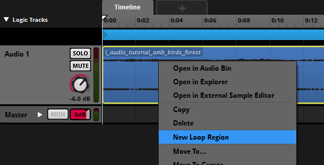
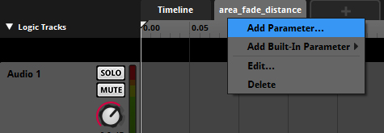
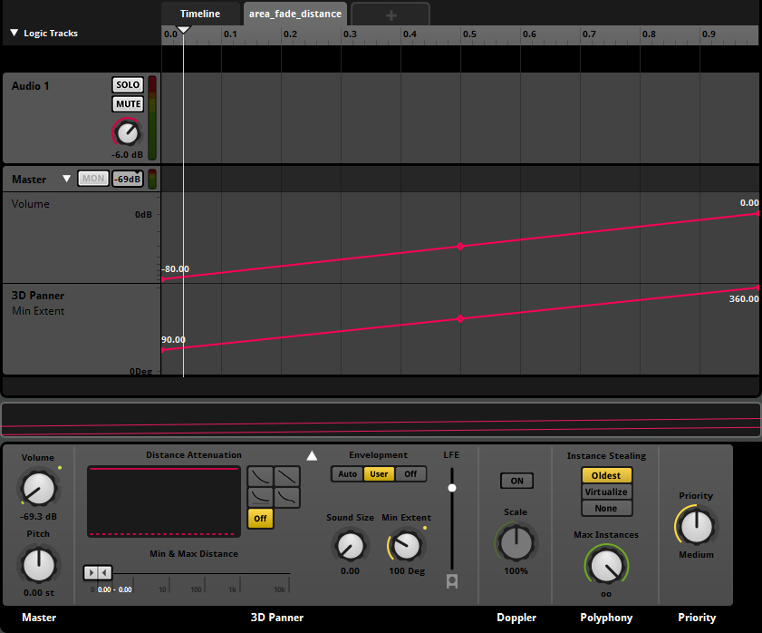

Обзор
В этом руководстве объясняется, как настроить окружающие звуки в проекте FMOD Studio и CRYENGINE.
Настройка атмосферы в FMOD Studio и CRYENGINE
Настройка окружающих звуков в FMOD Studio
CRYENGINE предлагает два аудиообъекта, которые можно использовать для настройки окружающих звуков на вашем уровне. Их называют Звуковая зона и Сущность области аудио, и оба прикреплены к форме на уровне, чтобы определить область, в которой воспроизводится звук.
Эти сущности отличаются от Аудио-триггер, как Звуковая зона и Объект аудиообласти не используйте стандартное студийное затухание FMOD. Поэтому их настройка в FMOD Studio должна быть разной, чтобы создать работающую реализацию вашего аудиоконтента.
Настройка базового объекта окружающего звука
Вам необходимо импортировать .wav файл в FMOD Studio, содержащий ваши окружающие звуки, и убедитесь, что он зациклен, добавив Новый регион Лупа в своем Хронология.

Теперь выберите Добавить параметр опция, которая позволяет вам добавить параметр для вашего звукового события под названием area_fade_distance в диапазоне от 0 до 1 (начальное значение должно быть 1).

Вы можете ввести желаемое имя для параметра и настроить подключенную аудиосистему Control с элементами управления параметрами в реальном времени (RTPC), которая будет использоваться на каждом объекте.
В примере ниже мы использовали имя area_fade_distance.
Этот параметр будет использоваться позже в CRYENGINE для ослабления или усиления звука, когда объект перемещается ближе или дальше от области, подключенной к аудиообъекту. Поэтому обязательно подключите вновь созданный area_fade_distance параметр глобальной аудиосистемы RTPC в пределах Редактор управления звуком.
Когда вы устанавливаете параметр area_fade_distance к значению по умолчанию = 1, вы можете просмотреть свою атмосферу в Редактор управления звуком используя Выполнить триггер функциональность.
В area_fade_distance на вкладке параметров добавьте автоматизацию громкости звука на основной дорожке. Когда значение параметра установлено на 0, звук должен быть неслышен, а при значении 1 он должен иметь желаемую громкость.
Вы можете отключить затухание расстояния в области «Дека». Кроме того, 3D Panner также можно автоматизировать, чтобы слышать звук в 3D, когда вы приближаетесь к форме. Когда вы приближаетесь к форме, звук окружает вас сильнее.
После этого ваша установка должна выглядеть так, как показано на скриншоте ниже:

Рекомендуется выполнить автоматизацию на Мастер-треке и ослабить ее до 0 дБ. Затем отрегулируйте громкость звуковой дорожки звука.
Теперь назначьте звук в банк, заново создайте свои звуковые банки, а затем соедините студийное событие FMOD и RTPC в редакторе элементов управления звуком, как описано. здесь.
Для получения дополнительной информации о том, как настроить созданное вами мероприятие студии FMOD внутри CRYENGINE, обратитесь к следующему руководству: Аудио и атмосфера.